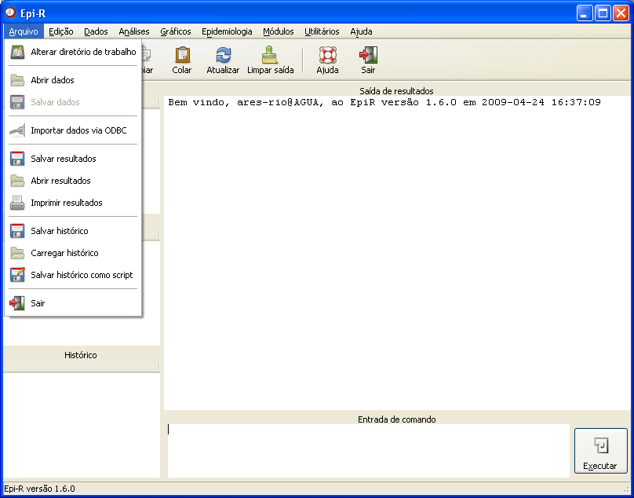

Menu Arquivo
Menu Arquivo

Figura 1. Janela principal do Epi-R destacando as opções do menu Arquivo.
Para obter informações detalhadas sobre cada opção, clique no link desejado:
Abrir dados
Abrir resultados
Alterar diretório de trabalho
Carregar histórico
Importar dados via ODBC
Salvar dados
Salvar histórico
Salvar histórico como script
Salvar resultados
Abrir resultados
Alterar diretório de trabalho
Carregar histórico
Importar dados via ODBC
Salvar dados
Salvar histórico
Salvar histórico como script
Salvar resultados
A opção "Imprimir resultados" gera um relatório com o conteúdo do campo "Saída de resultados" e imprime esse relatório. Deve-se lembrar que é necessário ter pelo menos uma impressora instalada para a conclusão dessa operação.
Para sair do aplicativo, clique na opção "Sair" do menu "Arquivo" ou na barra de atalhos.